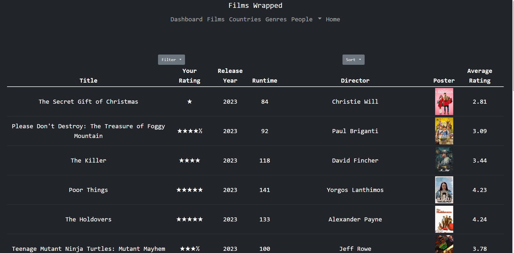
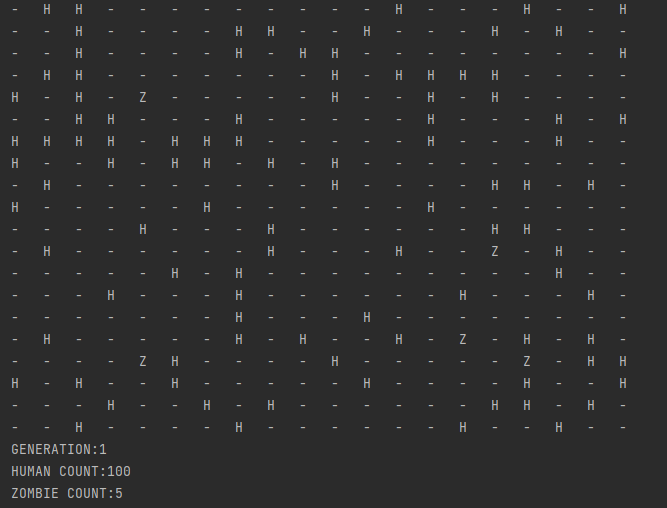
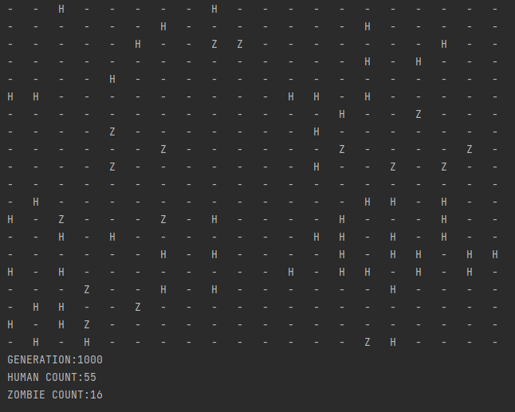
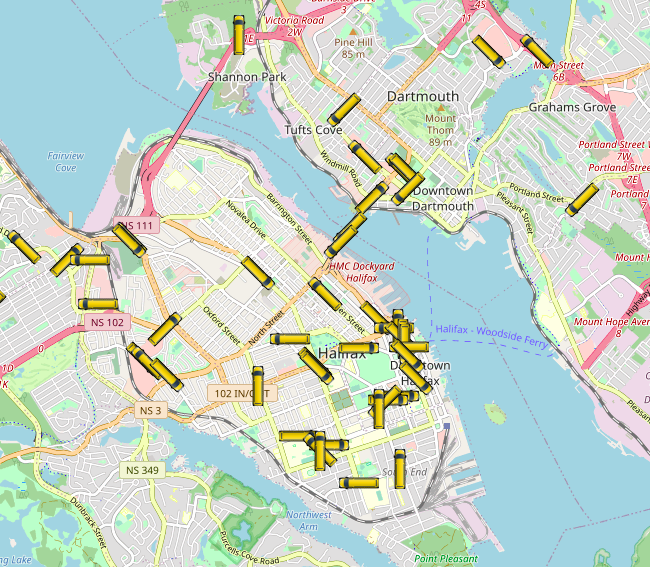
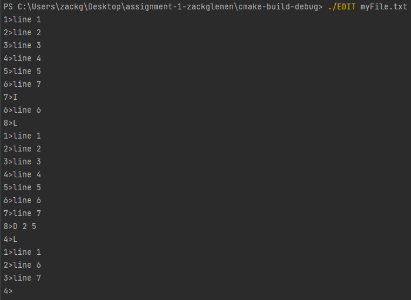
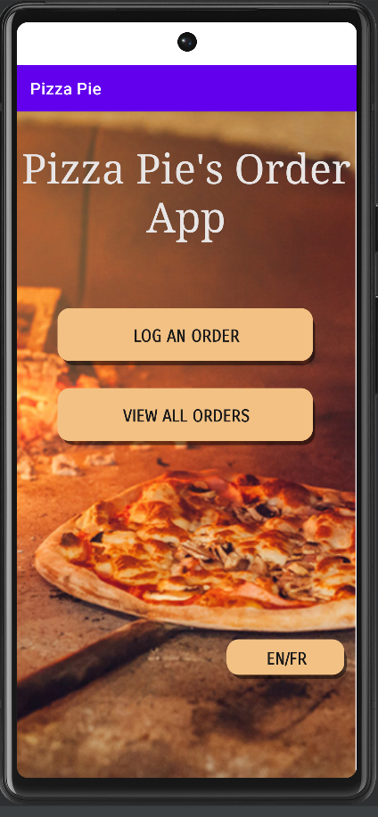
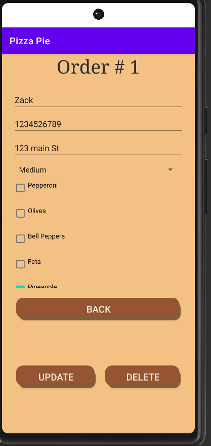

A screen shot of one of the current completed pages - this application is still under development. Please see Github link above for code.

Since December 2023, I've been in the development of a personal project known as Films Wrapped.
As a dedicated user of Letterboxd, a renowned social media platform for film enthusiasts, I meticulously document each movie I watch.
In December, Letterboxd introduced a feature called Letterboxd Wrapped, where they showcase users' viewing statistics,
including the number of films watched, top directors, and peak viewing weeks.
However, I found the provided data to be lacking, sparking a desire to create a more comprehensive solution.
Motivated by this vision, I began to create my own version of the statistics, drawing insights from Letterboxd watchlists, activity logs, and leveraging The Movie Database. While the project remains a work in progress, I take immense pride in its evolution thus far. Serving as the sole designer and developer, I've dedicated countless hours to its realization.
What initially began as a rudimentary script has evolved into a sophisticated web scraping web application. With each milestone achieved, I delve deeper into various programming languages and innovative solutions.
A before and after with a recording of me saying hello to my friend, Tom. Please see Github link above for code.
In June 2022, I completed a 5-week work-term for a Maker Space based out of Sydney, Cape Breton.
Their goal was to create a "practice microphone" designed to integrate with real-time headphone monitoring capabilities.
The I/O was to be programmed with multiple effects such as delay, distortion, and compression, which
could be switched on and off as the user pleased. My primary responsibility during this tenure was to engineer the reverb effect module for the device.
Convolution reverb consists of an impulse sample (a small recording of a clap in any room would do) and an input source merged together to artificially create the reverb of said room. My project is in C++ and I worked off of an old repository the head engineer had. During my term, I researched how to break down audio files in C, fourier transformations, and digital signal processing. In the end, I merged many open-source audio processing libraries together to acheive the end goal. The project took me the full 5 weeks to complete, finishing on the final day.
YourFolio lives on a private repository - so click the image to go to yourfolio.ca!
YourFolio represents the culmination of an enriching capstone project undertaken during my time at NSCC.
This innovative platform serves as a versatile solution for students seeking to showcase their e-portfolios seamlessly, with a user-friendly interface.
As one of seven dedicated team members, I assumed dual responsibilities as a front-end developer and the lead for branding initiatives.
This project was challenging but most importantly, immensely rewarding. It was my first foray into ASP.NET and working on a development project in a group setting. Our goal with this project was to create something that would have a lasting effect for us as developers and perhaps for future students.
A before and after of the city running for 1000 generations. Please see Github link above for code.
 
This Ecosystem Simulation was a final project for my Advanced Object Oriented Programming course. This simulation consists of
two types of organisms, humans and zombies circumnavigating a grid-like city.The zombies will eat humans if they
see them. In a certain number of rounds, the humans will spawn other humans if they have survived,
and the zombies will convert back to humans if they have not eaten. The challenge here was to have the two organisms
co-exist in the same space for a duration of 400 round without an extinction.
This project was challenging but very rewarding. The trick to having both organisms survive is to have a programmed bias where one chooses how the zombies first spawn. Here, I forced the initial zombie spawn to be in the seperate four quadrants to ensure that there would be no "zombie-wall" taking over the city. In the end I was able to have the organisms survive for a TBD (perhaps infinite) amount of generations.
A screenshot of the live transit feed in the Halifax downtown core. Please see Github link above for code.

This transit tracker, written in JavaScript, fetches an API every 15 seconds containing various data points from the transit
system. The bus images are updated with coordinates and bearings. This project was very fun and solidified how
to manipulate data from API for me.
A terminal snippet for the word processor. Please see Github link above for code.

This word processor was a project under my Data Structures course. The purpose is to create a command line
text editor complete with insert, append, delete, list, and save functionality. The processor was built on top of
a linked list data structure.
The key to this project was to make each different aspect of it as reusable as possible. This means that throughout my code, I've made methods that are completely self contained. The files themselves with a simple switch of data-type, could be reused for any number of future projects.
A screenshot of both the landing & individually logged order pages. Please see Github link above for code.
 
This Android App written in Java was my final project for a Mobile Development course. It's purpose is to allow
the user to log an order for a pizzaria with CRUD operations. It also implements an Enlish/French translation.